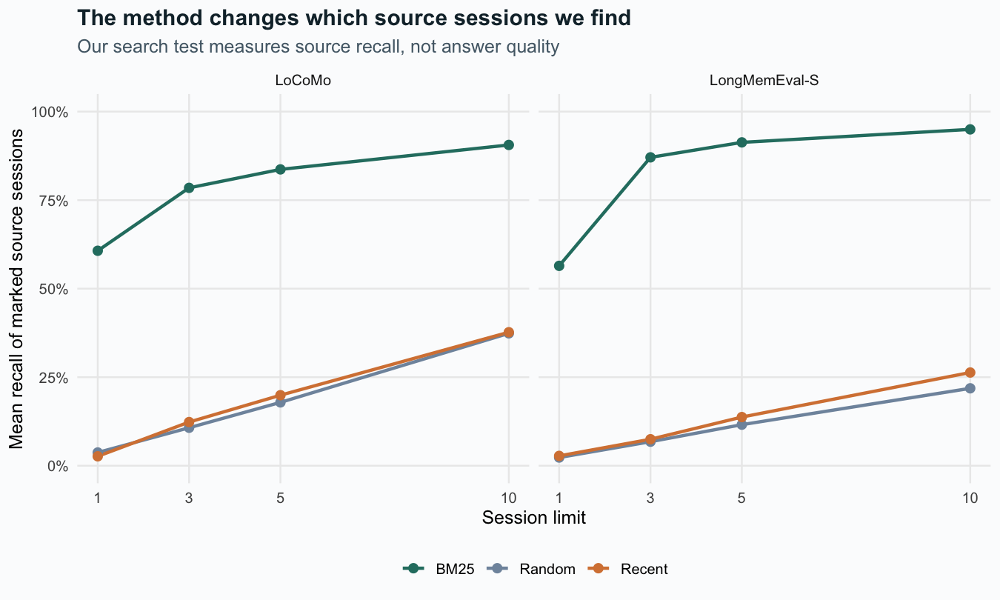
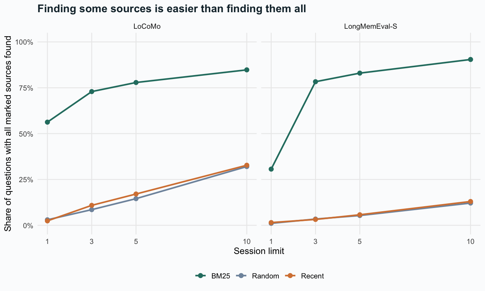
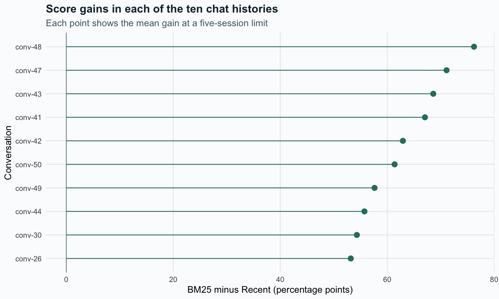
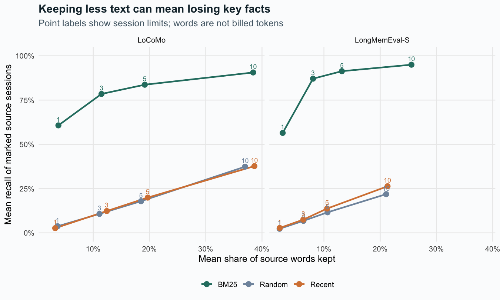
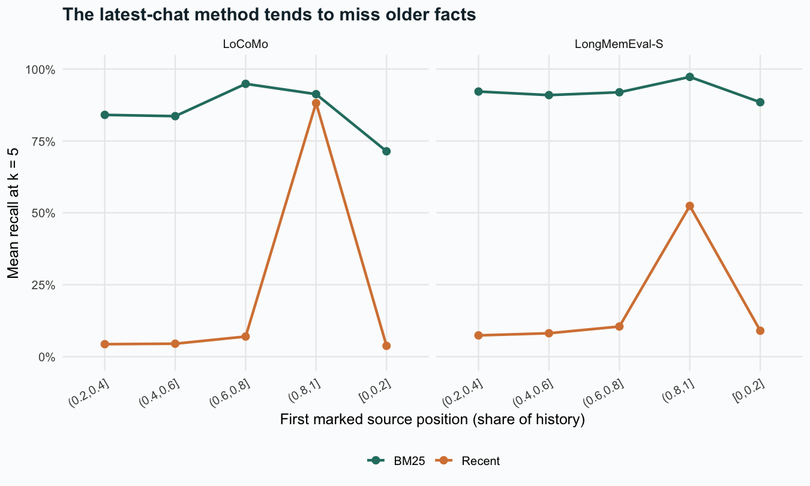

We ran 24,072 tests on 2,006 questions with usable source labels. Each test combines a question, a method, and a session limit. Each method sees the same question and chat history. We use the answer and source labels to score the chosen sessions, not to choose them. We made no calls to an AI model.
Three methods, four session limits
Method
How it chooses sessions
Why we include it
BM25
Finds query words, gives more weight to rare words, and adjusts for session length
A simple keyword search
Recent
Keeps the latest sessions first
A common way to trim a chat history
Random
Shuffles the sessions with a fixed seed
A chance-based reference we can repeat
Each method can keep up to 1, 3, 5, or 10 sessions. Sessions vary in length. The same count can mean a different number of words, tokens, and dollars. We search text and skip images. See the test settings for the full rules and the random seed.
Evidence recall
ggplot(curves, aes(k, recall, colour=strategy)) +geom_line(linewidth=1) +geom_point(size=2.5) +facet_wrap(~dataset) +scale_colour_manual(values=palette) +scale_x_continuous(breaks=c(1,3,5,10)) +scale_y_continuous(labels=scales::percent, limits=c(0,1)) +labs(x='Session limit', y='Mean recall of marked source sessions', colour=NULL,title='The method changes which source sessions we find',subtitle='Our search test measures source recall, not answer quality')

Recall is the share of a question’s marked source sessions that a method finds. A score of 100% means it found all of them. It does not mean an AI read those facts well or gave the right answer.
Finding all the facts
ggplot(curves, aes(k, all_hit, colour=strategy)) +geom_line(linewidth=1) +geom_point(size=2.5) +facet_wrap(~dataset) +scale_colour_manual(values=palette) +scale_x_continuous(breaks=c(1,3,5,10)) +scale_y_continuous(labels=scales::percent, limits=c(0,1)) +labs(x='Session limit', y='Share of questions with all marked sources found',colour=NULL, title='Finding some sources is easier than finding them all')

Finding some facts may not be enough. A task that spans several sessions may need them all. A tool should flag when it lacks part of the source text.
Scores by task
ggplot(cats, aes(strategy, category, fill=recall)) +geom_tile(colour='white') +geom_text(aes(label=sprintf('%.0f%%',100*recall)),size=3.2) +facet_wrap(~dataset, scales='free_y') +scale_fill_gradient(low='#f0f3f7',high='#63b9a5',limits=c(0,1),labels=scales::percent) +labs(x=NULL,y=NULL,fill='Recall',title='Scores vary by the type of question',subtitle='Recall at a five-session limit; task counts are in the download')
For LoCoMo, we draw from the ten chat histories 2,000 times, with replacement. Each draw keeps the questions from a history together. We then find the mean score gain, giving each question the same weight. The middle 95% of these gains forms a cluster-bootstrap interval. This shows how the gain varies when we change the mix of histories. Ten histories give a limited view of that range. We cannot treat it as a precise range for all users. LongMemEval reuses source text across histories. We show its score gain without an interval that assumes each question is independent.
# Executed in R/context_analysis.R; paired differences are clustered by conversation.set.seed(20261001)x <-subset(clusters, dataset =='LoCoMo')boot <-replicate(2000, { sampled <-sample(seq_len(nrow(x)), replace =TRUE)sum(x$total[sampled]) /sum(x$n[sampled])})quantile(boot, c(.025, .975))
ggplot(filter(clusters,dataset=='LoCoMo'), aes(reorder(cluster,gain),100*gain)) +geom_hline(yintercept=0,colour='#8797a1') +geom_segment(aes(xend=cluster,y=0,yend=100*gain),colour='#287d70') +geom_point(size=3,colour='#287d70') +coord_flip() +labs(x='Conversation',y='BM25 minus Recent (percentage points)',title='Score gains in each of the ten chat histories',subtitle='Each point shows the mean gain at a five-session limit')

How much text do we need to keep?
ggplot(curves, aes(retained_fraction,recall,colour=strategy)) +geom_path(linewidth=1) +geom_point(size=3) +geom_text(aes(label=k),vjust=-.8,size=3,show.legend=FALSE) +facet_wrap(~dataset) +scale_colour_manual(values=palette) +scale_x_continuous(labels=scales::percent) +scale_y_continuous(labels=scales::percent,limits=c(0,1)) +labs(x='Mean share of source words kept',y='Mean recall of marked source sessions',colour=NULL,title='Keeping less text can mean losing key facts',subtitle='Point labels show session limits; words are not billed tokens')

Keeping less text can mean losing key facts. This chart compares the share of words kept with recall. It does not measure answer quality or cost in dollars. We choose whole sessions, and their lengths vary.
Does the place in the history matter?
ggplot(pos,aes(position_band,recall,colour=strategy,group=strategy)) +geom_line(linewidth=1) +geom_point(size=2.5) +facet_wrap(~dataset) +scale_colour_manual(values=palette) +scale_y_continuous(labels=scales::percent,limits=c(0,1)) +theme(axis.text.x=element_text(angle=30,hjust=1)) +labs(x='First marked source position (share of history)',y='Mean recall at k = 5',colour=NULL,title='The latest-chat method tends to miss older facts')

We check where the marked facts sit after each test. The search methods do not see these source labels.